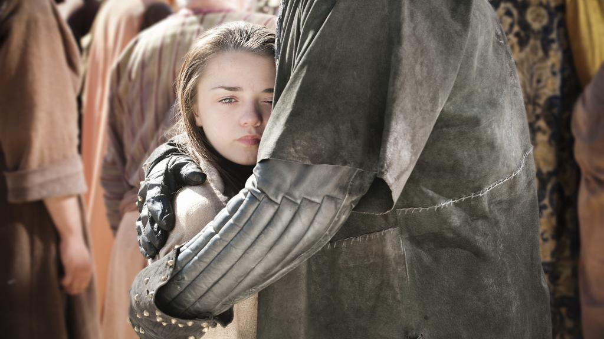

Sinopse: Os Stark de Winterfell recebem a visita da família real. O Rei Robert Baratheon faz a Eddard Stark, Lorde de Winterfell, uma oferta que ele não pode recusar. Do outro lado do oceano, o exilado Príncipe Viserys Targaryen cria uma aliança para reconquistar o Trono de Ferro; ele dará sua irmã, Daenerys, em casamento para o selvagem Khal Drogo em troca de seu exército. De volta a Winterfell, Catelyn Stark recebe uma pista que pode implicar no envolvimento de membros da família real em um assassinato, enquanto o jovem Bran Stark faz uma perigosa descoberta.
Sinopse: O destino de Bran Stark permanece incerto. Concordando em se tornar a Mão do Rei, Ned deixa Winterfell com Arya e Sansa, enquanto Catelyn fica para trás para cuidar de Bran. Jon Snow se dirige para o norte para se juntar aos irmãos da Patrulha da Noite. Tyrion decide ir para a Muralha com Jon. Viserys aguarda na esperança de recuperar o Trono de Ferro, enquanto Daenerys foca sua atenção em aprender como agradar seu novo marido, Drogo.
Sinopse: Ned se junta ao pequeno conselho em Porto Real. Jon Snow encontra dificuldades ao se adaptar a sua nova vida na Muralha. Suspeitando que os Lannister têm algo a ver com a queda de Bran, Catelyn decide ir para o sul para se juntar a Ned. Cersei e Jaime ponderam sobre as implicações da recuperação de Bran. Arya começa a estudar o manejo de espadas. Daenerys e Viserys discutem no caminho a Vaes Dothraki.
Sinopse: Um torneio é realizado para honrar a nova Mão do Rei. Ned examina um livro procurando pistas sobre a morte de seu predecessor. Jon toma atitudes para proteger Samwell Tarly de abusos no Castelo Negro. Viserys e Daenerys brigam mais uma vez em Vaes Dothraki. Sansa começa a se imaginar como uma Rainha, enquanto Arya vê um futuro bem diferente. Catelyn e Tyrion se encontram em uma estalagem na Estrada do Rei.
Sinopse: Robert e Ned discutem sobre como lidar com a aliança dos Targaryen com os Dothraki, com Robert ordenando um ataque preventivo contra Daenerys, criando um racha na relação dele com Ned. Tyrion, mantido como refém, ajuda Catelyn. Ela, porém, é recebida com frieza no Ninho da Águia pela viúva de Jon Arryn, sua irmã Lysa. Arya ouve uma conspiração contra seu pai.
Sinopse: Novamente como Mão do Rei, Ned é deixado administrando o reino enquanto Robert vai caçar, instaurando um decreto que terá grandes consequências nos Sete Reinos. No Ninho da Águia, Tyrion confessa seus “crimes” e exige que Lysa lhe conceda um Julgamento por Combate. Viserys recebe seu pagamento final vindo de Daenerys e Drogo.
Sinopse: Descobrindo a verdade, Ned confronta Cersei sobre a morte de Jon Arryn. Com o destino do desaparecido Benjen Stark em sua mente, Jon Snow faz seus votos para a Patrulha da Noite, porém não conseguindo o posto que desejava. Sor Jorah Mormont salva Daenerys de uma armadilha, isso enfurece Drogo que promete levar os Dothraki para onde eles nunca haviam ido. Um machucado Eddard se esforça para garantir uma transição ordenada em Porto Real.
Sinopse: Com um novo Rei nos Sete Reinos, os Lannister pressionam os Stark. No norte, com seu pai preso em Porto Real, Robb reune todos os vassalos e marcha para o sul na direção da guerra. Sansa implora pela vida de Ned à Joffrey.
Sinopse: Eddard Stark, aprisionado e acusado de traição, toma uma fatídica decisão. Sua esposa Catelyn negocia com o traiçoeiro Lorde Walder Frey, e seu filho Robb luta sua primeira batalha contra os Lannister. Enquanto isso, Jon descobre um segredo sobre Meistre Aemon, e Daenerys se posiciona contra Qotho.

Sinopse: Com as trágicas notícias da morte de Ned se espalhando pelos Sete Reinos, Bran e Rickon Stark compartilham uma visão. Enquanto isso, Catelyn pressiona Jaime Lannister sobre a queda de seu filho; Tyrion vai para o Sul depois de uma decisão surpreendente de seu pai; Arya tenta escapar de Porto Real; Jon enfrenta uma difícil escolha na Patrulha da Noite e Daenerys sofre um terrível revés porém encontra novas esperanças